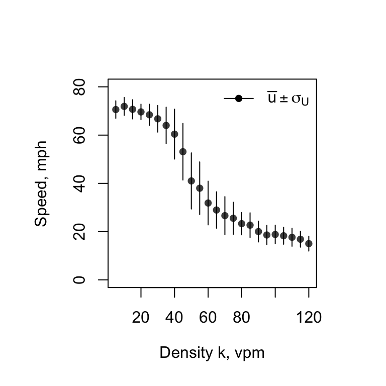
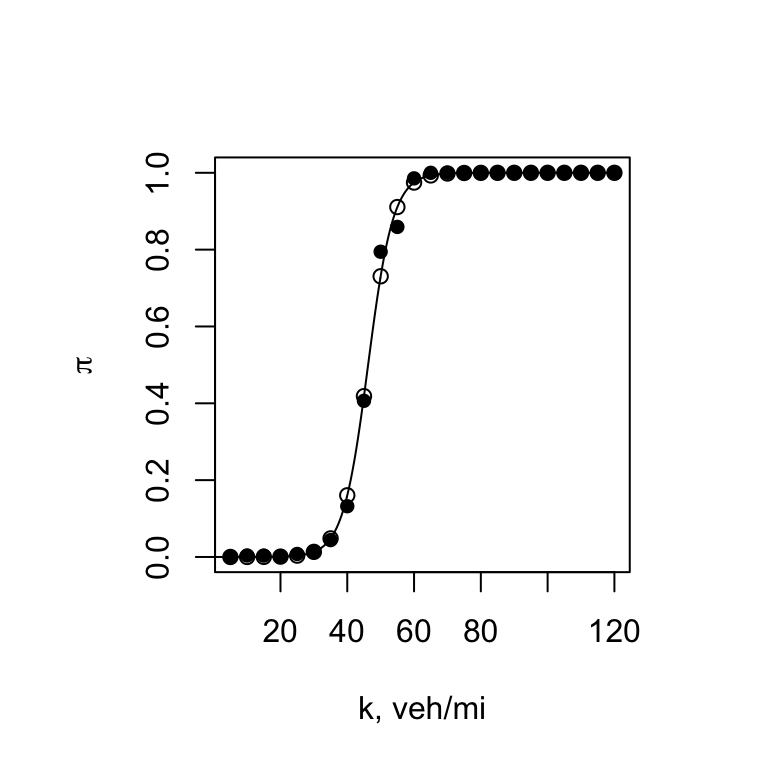
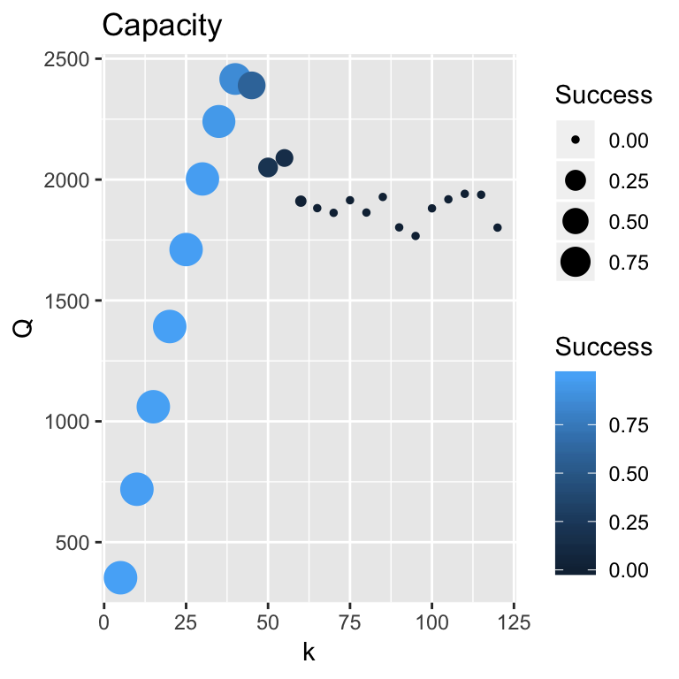

Flow and Capacity
Throughout our discussion of cartools, we have intentionally avoided discussing roadway capacity, a topic that has received much attention. In fact, we have not defined traffic flow as yet. The flow is approximated as average flow time traffic density (Daganzo 1997):
where \(q\) is treated as a constant value, \(\bar{u}\) as a weighted average by vehicle class and \(k\) as a constant value. Appearances are deceiving. The relationship is more complicated than it appears. Let us assume all vehicles are of the same class, say passenger cars and \(k\) is a constant. The flow \(q\) is not a constant. It is a random variable that we denote as \(Q\). thus \(Q = q = \bar{u} * k\) where \(Q\) is an expected value.
The definition of capacity that has been refined over the years. Banks (1998) simply defines capacity as:
where \(Q^*\) is the maximum value of \(Q\) and \(\bar{h}_{min}\) is the minimum average headway. This estimate, which is applied to highway and rail systems, is appealing owing to its simplicity. Elefteriadou (2014) defines the HCM capacity as a “maximum obtainable flow rate.” The \(Q^*\) relationship satisfies this definition. Both authors recognize the difficulties of estimating and assigning capacity owing to the volatility of the field data.
Maximize Traffic Throughput
We estimate \(Q^*\) as a maximization problem with an objection function to “maximize throughput.” Thus, we rewrite out \(Q(t) = k * U(t)\) model where \(U(t) = U(k, u, \sigma, h_{safe}, t)\) as:
A major strength of the Brownian bridge model of speed, a stochastic model \(U(k,t)\), is its ability to explain the role of traffic noise and role that traffic density \(k\) plays in forecasting the probability of being in a congested state, \(\pi(k).\) Since the \(U(k,t)\) model is derived from a controlled experiment where \(k\) is a fixed value, traffic flow, a most important measure of highway performance, is simply defined as a parsimonius, stochastic model:
To draw attention to the significance of the model in explaining traffic flow with \(k\), we rewrite as a time-series model:
where \(U(t) = U(k, u, \sigma, h_{safe}, t)\). The model tacitly incorporates the roadway geometry (a bottleneck) and driver behavior as reflected by \(h_{safe}\). Here is a reminder that the process is volatile and chancy:


Optimum Solution
The solution seems straightforward enough. Select \(k^*\). The following graph uses this information to aid in the decision-making. “Success” refers to the probability that the roadway is operating in a free-flow state, \(P(X = 0) = 1 - \pi\).

The “maximum throughput” is \(Q^*\) = 2400 vph and success probability is \(P(X = 0)\) = 0.13 at \(k^*\) = 40 vph. The HCM specifies \(k^*\) as 45 vpm. According to our results, \(Q\) = 2340 vph and \(P(X = 0)\) = 0.6.
The importance of \(k\) is clearly evident. For \(k > k^*\), the \(Q \approx 1800\) vph and \(P(X = 0) \rightarrow 0\) performance measures suffer. Good performance is achieved for \(k \leq k^*\) = 40 vph.
So, what is correct value of capacity? The best answer is “It depends.” Consider the HCM guidelines give a range of capacity values from 2250 to 2400 vph. The vale depends on the free-mean speed associated with the geometric design. (Laflamme and Ossenbruggen 2018) give a range from 2400 to 2700 vph. Their approach uses an extreme-value value estimation approach and the analysis of maximum daily flow data including censored data. This estimation method helps explain why their capacity range is greater than the HCM.
References
Banks, James A. 1998. Introduction to Transportation Engineering. McGraw-Hill.
Daganzo, Carlos F. 1997. Fundamentals of Transportation and Traffic Operations. Permagon.
Elefteriadou, Lily. 2014. An Introduction to Traffic Flow Theory. New York, New York: Springer.
Laflamme, Eric, and Paul J. Ossenbruggen. 2018. “Estimation of Stochastic Traffic Capacity Using Extreme Value Theory and Censoring.” European Transport Research Review in review.